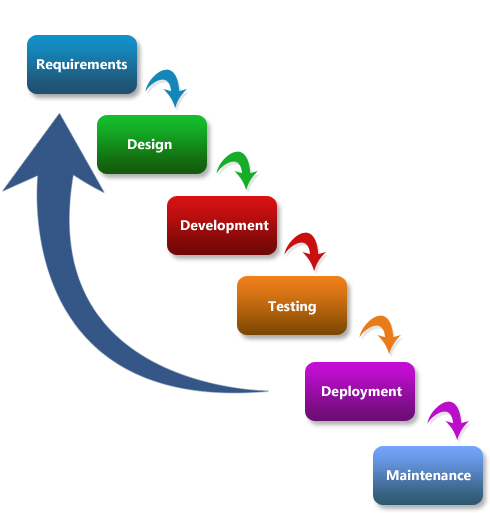
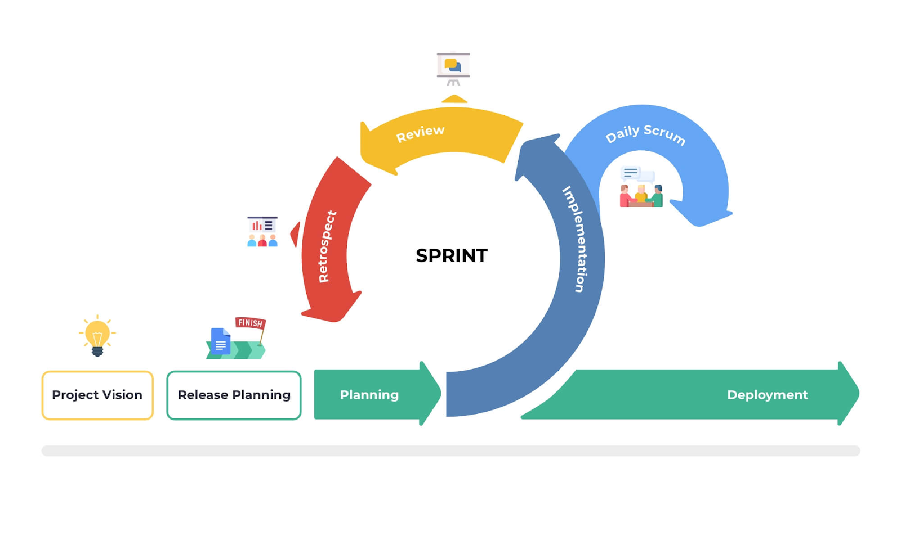

Agile Methodology
From rigid plans to adaptive development
What is Agile?
- Agile is an iterative approach to project management and software development
- Instead of betting everything on a "big bang" launch, Agile teams deliver work in small, but consumable, increments
The Old Way: Waterfall
- Linear and sequential process
- One phase must be completed before the next begins
- Heavy planning upfront
- Limited flexibility once started

The Problem with Waterfall
Waterfall Issues
- Average 70% features unused (Standish Group)
- Late discovery of problems
- Customer sees product only at the end
- Changes are extremely costly
Agile Solution
- Deliver value in 2-4 week cycles
- Continuous customer feedback
- Embrace changing requirements
- Early and often testing
Standish Group Report (2020):
- Waterfall success rate: 29%
- Agile success rate: 42%
Birth of Agile
- In 2001, 17 software developers met at a ski resort
- Including Martin Fowler, Kent Beck
- They shared frustrations with traditional methods
- And created the Manifesto in just 4 days

Agile Manifesto Values
"The best architectures, requirements, and designs emerge from
self-organizing teams."
- Agile Principle #11
- Agile Principle #11
Individuals and interactions
over processes and tools
Working software
over comprehensive documentation
Customer collaboration
over contract negotiation
Responding to change
over following a plan
Key Agile Principles
- Deliver working software frequently
- Embrace changing requirements
- Work closely with customers and teams
- Reflect and improve regularly

Popular Agile Frameworks
Scrum
- Sprints (2-4 weeks)
- Roles: PO, Scrum Master
- Daily standups

Kanban
- Visual workflow
- WIP limits
- Continuous delivery

When to Use Agile
- High uncertainty projects
- Rapidly changing environments
- Need for customer feedback during development
Conclusion
- Agile helps teams stay flexible and customer-focused
- It's not a magic solution — but a powerful mindset shift
- Adaptation and learning are at the heart of Agile